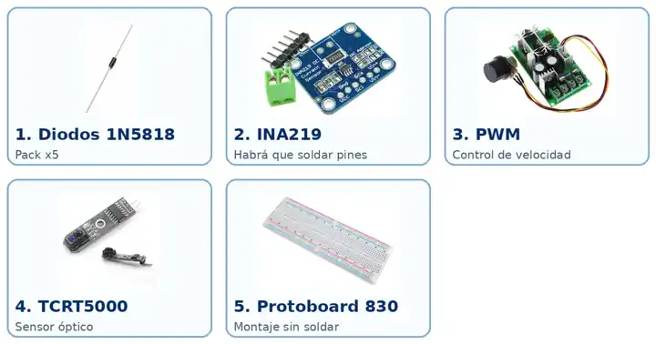

Página 1
CAPÍTULO 0 · PREPARACIÓN
Antes de tocar nada
Primero entendemos las piezas. Después las montamos.
OBJETIVO
Este capítulo no es para encender la maqueta. Sirve para saber qué es cada pieza, qué ha llegado, qué falta y cómo prepararemos el trabajo antes de cortar, soldar, pegar o taladrar.
1
RECIBIR
→
2
IDENTIFICAR
→
3
PREPARAR
DOS CIRCUITOS DIFERENTES
⚙️ El que mueve
Red → fuente 12 V → PWM → motor → rotor.
📈 El que genera y medimos
Imanes → bobina → rectificador → carga → INA219 → ESP32.
A · REDAlargador + fuente
B · 12 VPWM + motor
C · GENERACIÓNRotor + imanes + bobina
D · MEDIDADiodos + INA219 + ESP32
Página 2
CAPÍTULO 0 · TABLERO
La base de la maqueta
Qué es el DM/MDF y para qué lo queremos
TABLERO DM / MDF
≈ 70 × 40 cm
El DM o MDF es un tablero de fibras de madera prensadas. Será el chasis: aquí fijaremos fuente, PWM, motor, electrónica, bobina y soportes.
| Grosor | 10–12 mm |
|---|
| ¿Exacto? | No. 60×40 u 80×40 también sirven. |
|---|
| ¿Taladrar ya? | NO. |
|---|
Página 3
CAPÍTULO 0 · ENVÍOS
Qué viene de camino
Checklist para ir tachando al abrir los paquetes
CALENDARIO
Hoy
Protoboard 830 puntos.
Mañana
Diodos, INA219, fuente 12 V/10 A, kit de resistencias, TCRT5000, alargador, cable rojo/negro y PWM.
13–14 ago
Terminales de horquilla.
14–20 ago
Resistencias 100 Ω / 5 W.
19–22 ago
Alambre esmaltado AWG28.
26–31 ago
Motor 775 + soporte + adaptador.
Página 4
CAPÍTULO 0 · INVENTARIO VISUAL
Electrónica y control
Fotos originales para que Sara reconozca las piezas

1 · Diodos 1N5818
Cuatro formarán el puente rectificador. La banda marca orientación.
2 · INA219
Mide tensión y corriente. Habrá que soldar sus pines.
3 · PWM
Es el acelerador del motor; no es un medidor.
4 · TCRT5000
Sensor óptico auxiliar para detectar una marca y calcular RPM.
5 · Protoboard
Base de pruebas para el puente de diodos y señales.
INA219: tendrá explicación de soldadura. Puente: lo construiremos con cuatro diodos porque no encontramos un módulo comercial que nos convenciera.
Página 5
CAPÍTULO 0 · INVENTARIO VISUAL
Potencia y movimiento
Cómo reconocer lo que llevará energía hasta el motor

1 · Fuente 12 V / 10 A
Convierte la red en 12 V DC.
2 · Bornes
Buscaremos L, N, tierra, V− y V+ antes de encender.
3 · Alargador
Conservaremos el macho y retiraremos la hembra.
4 · Horquilla
Se crimpa en el cable para atornillarlo limpiamente.
5 · Cable AWG18
Zona 12 V: fuente → PWM → motor.
6 · Motor 775
Hará girar el rotor; esperaremos al adaptador real para cerrar la mecánica.
LA SIERRA NO SE USA
La hoja de sierra incluida en el kit NO será el rotor. Aprovecharemos motor, soporte y sistema de apriete para sujetar un rotor seguro basado en CD o disco ligero.
Página 6
CAPÍTULO 0 · INVENTARIO VISUAL
Generación y control
Material que ya tenemos y piezas para la bobina

1 · Resistencias 100 Ω / 5 W
Carga para ensayos. Comprobar el valor impreso.
2 · Cobre esmaltado AWG28
Con él fabricaremos la bobina.
3 · Imanes
Tenemos redondos 15×2 mm y rectangulares; priorizaremos los redondos.
4 · ESP32-S3
Cerebro del sistema de medida.
5 · KY-003
Sensor Hall disponible como plan B.
6 · Sierra
NO SE UTILIZA.
La bobina no viene hecha. Tendrá capítulo propio: molde → vueltas → conteo → tomas intermedias → fijación → raspado del esmalte → continuidad → montaje frente al rotor.
Página 7
CAPÍTULO 0 · FALTANTES
Lo que todavía hay que conseguir
Ferretería y herramientas que no venían en los pedidos
Página 8
CAPÍTULO 0 · DECISIONES
Qué está decidido y qué no
No confundimos una idea provisional con una decisión final
YA DECIDIDO
Alimentación: alargador → fuente 12 V.
Movimiento: fuente → PWM → motor.
Rectificación: 4 diodos 1N5818 en protoboard.
Medida: INA219 + ESP32-S3.
Imanes: redondos 15×2 mm como base.
Sierra: no se usa.
PENDIENTE
Rotor definitivo: esperar motor/adaptador real.
Número exacto de imanes: se probarán configuraciones.
Molde de bobina: se diseña con el rotor medido.
Distancia bobina–imán: debe quedar ajustable.
RPM: TCRT5000 o KY-003 según cuál mida mejor.
PROBLEMAS PREVISIBLES
Selector 110/220. Identificar antes de encender.
INA219 sin soldar. Practicar primero.
Rotor desequilibrado. Colocar imanes simétricamente.
Imanes despegados. Curar epoxi y proteger rotor.
Bobina lejos. Soporte ajustable.
Lecturas raras. Multímetro antes que software.
Demasiadas RPM. Arrancar siempre con PWM bajo.
Cables confusos. Etiquetarlos desde el principio.
Página 9
CAPÍTULO 0 · CIERRE
No pasamos al capítulo 1 hasta…
Checklist final de salida
SIGUIENTE: CAPÍTULO 1
Del enchufe a los 12 voltios.
Alargador → cortar → pelar → terminales → L/N/tierra → revisar → primer encendido → medir V+ / V−.